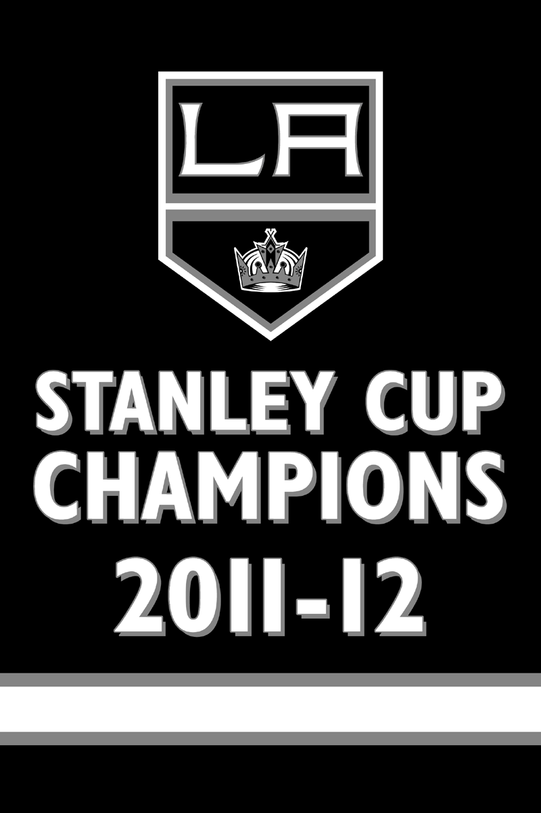

Here you will find history Stanley Cup Championships  2012 — First Stanley Cup 2014 — Second Stanley Cup Logo History 1967–1975 1982–1988 1988–1998 1998–2002 2002–2011 2011–2024 2024–Present Uniform History 1967–1988 1988–1998 1998–2007 2007–2011 2011–2024 2024–Present